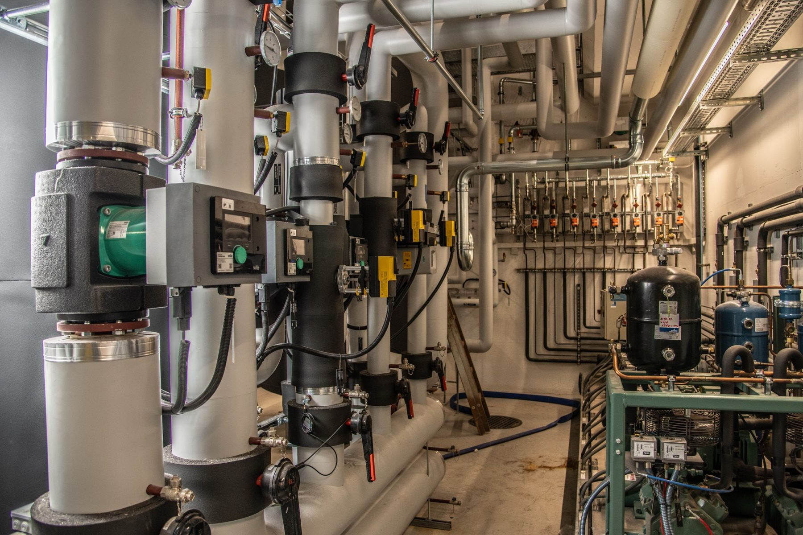
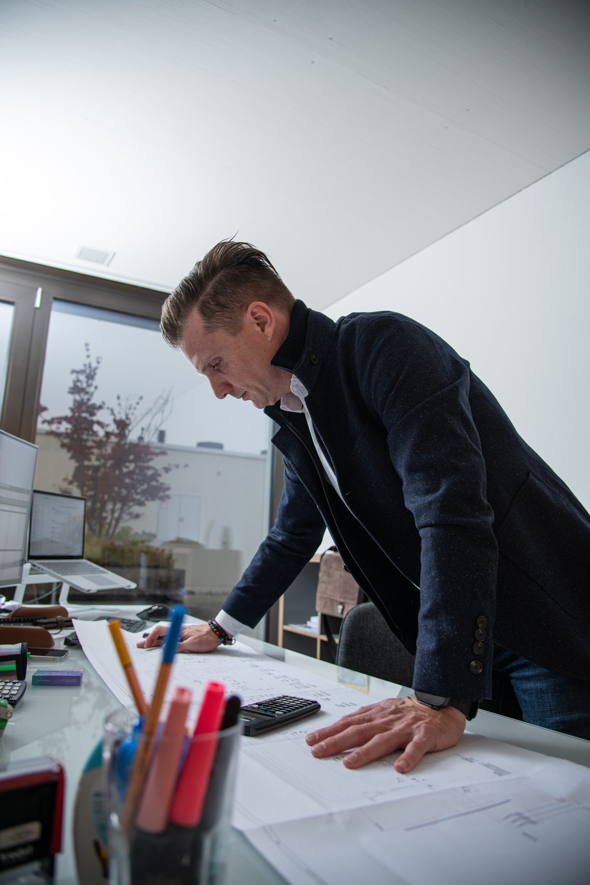
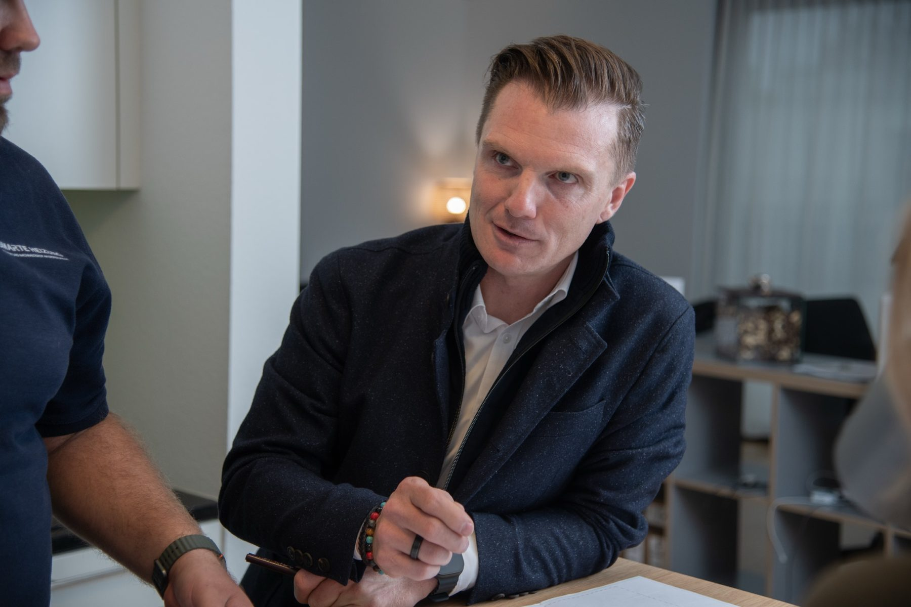

Wissen
News &
Einblicke
Fachbeiträge aus der Planungspraxis — zu Normen, Förderung, Sanierung im Bestand und dem, was im Betrieb tatsächlich über den Verbrauch entscheidet. Jeder Beitrag ist in sechs bis sieben Minuten gelesen.

Hydraulischer Abgleich: der kleinste Eingriff mit der grössten Wirkung
Warum halbe Häuser zu warm und halbe zu kalt sind, was ein Abgleich wirklich kostet und woran Sie erkennen, ob er je gemacht wurde.

Wärmepumpe im Bestand: wann sie funktioniert und wann nicht
Vorlauftemperatur, Heizflächen und Schallschutz entscheiden — nicht das Baujahr. Eine Einordnung ohne Versprechen.

Lüftung nach SIA 382/1: was bei der Abnahme wirklich geprüft wird
Aussenluftraten, Messprotokolle und die Punkte, an denen Anlagen bei der Abnahme regelmässig durchfallen.

Trinkwasser und Legionellen: was die Planung leisten muss
Temperaturhaltung, Stagnation und Totleitungen. Warum das Problem fast immer in der Planung entsteht und nicht im Betrieb.

Gebäudeautomation im laufenden Betrieb erweitern
Offene Schnittstellen, Datenpunktlisten und Migrationspfade — wie man eine Leittechnik erneuert, ohne das Gebäude anzuhalten.

Betriebsoptimierung: die ersten zwei Jahre entscheiden
Warum neue Anlagen im zweiten Winter oft mehr verbrauchen als im ersten — und was dagegen hilft.

Free Cooling: wann sich freie Kühlung wirklich rechnet
Die Grenztemperatur entscheidet, nicht die Technik. Wo freie Kühlung viel bringt und wo sie nur Anlagentechnik hinzufügt.

Fördergelder in der Schweiz: die Reihenfolge entscheidet
Der häufigste Grund für abgelehnte Gesuche ist kein formaler Fehler, sondern ein zu früher Baustart.

GEAK, Minergie, SNBS: welches Label wofür
Drei Instrumente mit drei verschiedenen Zwecken. Was jedes verlangt, was es kostet und wann es sich lohnt.

Integrale Planung: warum Einzeloptimierung scheitert
Jedes Gewerk für sich optimiert ergibt kein optimales Gebäude. Wo die Schnittstellen liegen und wann sie geklärt sein müssen.
Messkonzept: ohne Zähler keine Steuerung
Welche Messpunkte man wirklich braucht, welche Kennzahlen etwas aussagen und warum ein Zähler zu wenig schlimmer ist als zehn zu viel.
Kontakt
Eine Frage zu Ihrem
Gebäude?
Schildern Sie uns kurz die Ausgangslage. Wir melden uns innerhalb von zwei Arbeitstagen.
- info@energie-studio.ch
- Standort
- Windisch, Kanton Aargau